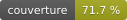

Couverture de code d'Emberfall
Part du code exécutée par les tests (cargo-llvm-cov), mise à jour à chaque poussée sur main. Cliquer sur un dépôt pour voir chaque fichier ligne par ligne.
| Dépôt | Lignes | Lignes couvertes | Fonctions | Régions | Évolution | Dernière mesure |
|---|---|---|---|---|---|---|
| emberfall-common Règles partagées, protocole, simulation |
 |
4978 / 5278 | 93.26 % | 95.5 % | 2026-11-19 22:41 UTC8a81c8a6 |
|
| emberfall-server Serveur, comptes, base de données |
 |
2634 / 3702 | 74.39 % | 75.85 % | 2026-11-19 22:45 UTCc18e90d9 |